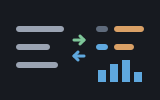

A reckoner seed: the sky as arithmetic — machines/seeds/seedephemeris.shoddy
seedephemeris brings ephemeris
to a calculator keyboard: sidereal time, the sun and the moon as sky
positions, the moon's phase, age, distance, rise and set, the five
naked-eye planets, the observer transform and the separation between two
sky positions.
The shapes are seedgeo's, one sphere
later. A point on the Earth is the two-element LIST
seedgeo established; a sky position is the same shape one frame up,
{ ra dec }, built by EPHSUN,
EPHMOON and EPHPLANET and consumed by
EPHALTAZ and EPHSEPARATION; and what an observer
sees is { alt az }. A date is a Julian day number, made by
seedjulian's JULDAYNUMBER or
seedgeo's GEOJULIAN — this seed mints no dates of its own.
“What's that bright thing, and when does the moon rise” is a calculator question if anything is. The whole sky arrives with no engine change at all — the promise a seed exists to keep.
Nothing here aborts. ephemeris's one abort is
EphPlanet's chooser; the same test is asked here first and
refused with the same words, minus the death. A declination outside
−90..90 is refused too — a sky list and a point list are the same
shape, and the runaway declination is the tell that a point was handed
where a sky position belonged.
An Option arrives as a one-cell
LIST — { } for none, { h }
for a rise at h — the encoding seedgeo's sun words already use, and for the
same reason: a word must push exactly one cell or UNDO's
accounting breaks.
2026 6 21 GEOJULIAN
x: 2461212.5 ' from seedgeo - or JULDAYNUMBER from seedjulian
2461212.5 21 EPHMOON
x: { 187.3 -3.2 } ' the moon's { ra dec }, give or take the night
{ 53.72 -1.86 } 2461212.5 21 EPHMOON 2461212.5 21 EPHALTAZ
x: { 12.4 121.7 } ' altitude, and the compass bearing to face
2461212.5 21 EPHMOONPHASE
x: 0.42 ' fraction lit
{ 53.72 -1.86 } 2461212.5 EPHMOONRISE
x: { 11.9 } ' UTC hours, in a one-item LIST - or { } on a
' day the moon genuinely does not rise
EPHSATURN 2461212.5 21 EPHPLANET 2461212.5 21 EPHSUN EPHSEPARATION
x: 121.6 ' Saturn's elongation from the sunAnd a bad argument refuses, rather than ending the session:
3 2461212.5 0 EPHPLANET
?: EPHPLANET: PLANET 3 IS THE EARTH, WHICH IS WHERE YOU ARE STANDING — THE GEO WORDS ANSWER FOR IT
{ 0 91 } { 0 0 } EPHSEPARATION
?: EPHSEPARATION: A DECLINATION OF 91 IS OUTSIDE -90..90 — IS THIS A POINT WHERE A SKY POSITION SHOULD BE?| Word | Description |
|---|---|
| EPHSIDEREAL ( jd h -- deg ) | Greenwich mean sidereal time at that UTC hour, degrees 0..360. Add an east longitude for the local form. |
| EPHSUN ( jd h -- sky ) | The sun as a sky position, { ra dec } in degrees. For rise and set at a place, GEOSUNRISE is the word; this one is for the sky. |
| EPHMOON ( jd h -- sky ) | The moon as a sky position, { ra dec } in degrees, geocentric, to about a third of a degree. |
| EPHMOONDIST ( jd h -- m ) | The distance to the moon in metres, from its parallax. |
| EPHMOONPHASE ( jd h -- f ) | The illuminated fraction, 0 at new through 1 at full. |
| EPHMOONAGE ( jd h -- days ) | Days since new moon, 0 up to a synodic month of 29.53 — what says waxing or waning when the fraction alone cannot. |
| EPHMOONRISE ( p jd -- hs ) | UTC hours of moonrise on that day as { h }, or { } — roughly once a month a day genuinely has none, and near a pole the moon can be up or down for weeks. |
| EPHMOONSET ( p jd -- hs ) | UTC hours of moonset, { h } or { }, on the same terms as EPHMOONRISE. |
| EPHMERCURY … EPHSATURN ( -- planet ) | The five choosers, as words. The numbering keeps the Earth's seat: Mars is 4. |
| EPHPLANET ( planet jd h -- sky ) | A planet as a sky position, { ra dec } geocentric. Name it with EPHMERCURY through EPHSATURN; asking for 3 is refused with the truth. |
| EPHALTAZ ( p sky jd h -- view ) | What an observer at p sees of a sky position at that instant: { altitude azimuth }, azimuth a compass bearing. |
| EPHSEPARATION ( a b -- deg ) | The angle between two sky positions, degrees. |
| User | How | |
|---|---|---|
| halifax | Folded last of all, so its words land under a -- seed-ephemeris -- heading at the end of WORDS. | |
 | sparky | The same fold, and the same sky at a Sparky prompt. |
A mill claims this seed by folding RckSeedEphemeris over
its reckoner state, appended at the end of the fold for the reason every
seed is: the order is the order WORDS prints its group
headings in, and both mills' golden suites assert it from a list.
| Machine | Why | |
|---|---|---|
| ephemeris | Every answer. The bridge computes nothing of its own. | |
| geo | GeoTryAt checks the observer's coordinates without aborting, exactly as seedgeo checks them. | |
| cuttle | The Cell type a sky position is carried in. | |
| reckoner | RckReg and RckSeeding for registration, and the argument readers that never abort. | |
| seq | Pair for reading two arguments as one refusal-aware step. |